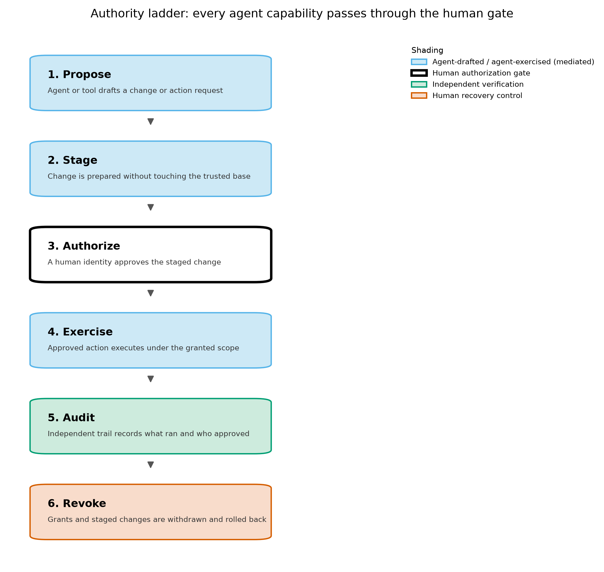

Agentic Authority Architecture
The governing rule
Every architecture in this review answers the exploitation path defined in [@sec:threat_model]: harden components so that a compromise of one does not become a compromise of all. The authorized-misuse path needs a different instrument. Its governing rule is simple to state and expensive to honor: a component exposed to untrusted input must not simultaneously hold broad authority over valuable assets. A browser parses hostile web content, an agent reads hostile repositories and documents, a parser processes attacker-shaped files — and each of those components is, in the agent era, a candidate for total persuasion rather than mere compromise. The rule is the classical protection problem of [lampson1974] restated for agents: the question is never only whether a component can be broken, but who may exercise which authority through it. It is also the confused-deputy hazard of [hardy1988] made continuous: the deputy now reads its instructions from the same channel the attacker writes to.
The rule converts directly into architecture. Split the system so that no component both touches untrusted input and holds broad authority; place the authority that must exist — credentials, approvals, deployment — behind interfaces too narrow for a persuaded component to abuse. This section defines that architecture: {{CONFIG_NUM_TRUST_DOMAINS}} trust domains, {{CONFIG_NUM_CONTROLS}} controls that hold regardless of host distribution, and an authority ladder that separates what an agent may do alone from what requires a principal outside it. The section proposes a design; it is not a claim about the defaults of any distribution reviewed elsewhere in this document.
Seven trust domains
| Trust domain | Intended contents | Restrictions to preserve |
|---|---|---|
| Administration | OS management, policy changes, trusted update operations. | No routine browsing, repository builds, document parsing, or agent-generated commands without independent review. |
| Personal identity | Sensitive browser sessions and personal accounts. | Not colocated with untrusted development dependencies or a general-purpose autonomous agent. |
| Credential service | Non-exportable keys where feasible; narrowly scoped signing and credential-issuance operations. | Expose specific operations rather than raw secrets or an unrestricted shell; require approval from outside the agent for consequential operations. |
| Agent execution | One task or repository, temporary working files, tightly scoped tools. | Disposable VM or comparable isolation; no host home directory, broad credential directory, privileged container socket, or ambient production session. |
| Browsing and intake | Untrusted websites, downloads, email attachments. | Kept separate from administration and signing; anything crossing into trusted work is explicitly reviewed. |
| Release and deployment | Reviewed build outputs; narrowly authorized deployment actions. | The agent may propose a change but must not be able to alter the approval policy or approve its own release. |
| Recovery | Known-good configuration, independent backups, recovery credentials. | Kept beyond the destructive authority of the daily workstation and its agent. |
![The seven trust domains of the proposed agentic authority architecture and the boundaries between them. Administration, personal identity, and the credential service hold assets whose loss is not recoverable by rebuilding; agent execution and browsing/intake meet hostile input and are deliberately disposable; release/deployment mediates what leaves; recovery sits beyond the destructive authority of everything else. The architecture’s objective is real separation of authority, not maximizing the number of compartments.](../figures/trust_domains.png)
The table and [@fig:trust_domains] encode two design judgments. First, hostile-input domains and authority domains are different kinds of places: agent execution and browsing/intake are deliberately cheap to destroy, while administration, identity, and credentials are deliberately expensive to enter. Second, the mapping onto concrete platforms varies — for a Qubes deployment these roles become a manageable number of qubes with narrow qrexec policies [qubes_architecture; qubes_qrexec]; for a conventional workstation the highest-risk execution moves to the separate VM host or machine described in [@sec:servers]. The objective in both cases is the same: real separation of authority, not a diagram with many boxes.
Nine controls and their design rationale
The domains define where authority lives; the controls define how work crosses the boundaries. Each control below is stated as an operating rule with the design rationale that makes it non-negotiable.
| Control | Operating rule | Design rationale |
|---|---|---|
| Task-scoped credentials | Prefer short-lived, repository- or service-specific credentials; never hand the agent the owner’s general cloud identity because a task occasionally needs a deployment. | An agent can only misuse authority it holds. Scoping bounds the authorized-misuse blast radius at issuance time, which is the last moment the choice is fully under the principal’s control. |
| Boundary-controlled egress | Allow only required destinations, at a boundary the agent cannot rewrite, and account for permitted destinations that themselves accept uploads or messages. | A hostname allowlist is not a data-loss policy: issue trackers, paste sites, CI logs, and webhooks are all “allowed hosts” that exfiltrate. Egress control must govern channels, not merely names. |
| External approvals | Require an independent human or deterministic policy check for production changes, secret access, account administration, and publishing. | A second AI instance reading the same hostile material is not automatically an independent security boundary: shared context material and correlated failure modes mean the “reviewer” can be persuaded by the same bytes. Independence must come from different information and authority, not from a second instance. |
| Operation mediation, not vague intentions | Services expose constrained operations — “sign this exact artifact for this release” — never “use the signing key responsibly.” Approval context includes the artifact, destination, scope, and expiration. | Vague intentions are unenforceable because nothing checks compliance against them. Mediated operations give the approver a concrete object to accept or reject and give the audit trail something to record; this is the confused-deputy fix of [hardy1988] applied at the API surface. |
| Minimal shared state | Transfer only the files a task needs; treat returned code, documents, and build artifacts as untrusted until checked; never automatically promote an agent’s home directory or development image into a trusted environment. | Shared state is the channel by which hostile content reaches authority. Every unreviewed promotion is a boundary crossing performed by the agent rather than the policy. |
| Environment refresh | Destroy task environments when work ends; apply updates before creating the next ones. Distinguish deletion of an environment from revocation of credentials it could access. | Refresh caps how long a foothold persists, but deletion touches only the environment: credentials already issued outlive it and must be revoked on their own schedule. Conflating the two leaves live authority attributed to a dead machine. |
| Tool-bridge constraining | Review filesystem, browser, repository, CI, cloud, and messaging integrations as explicit grants of authority, scoped like any other credential. | An isolated process with a powerful API token is still a powerful actor: the tool bridge is where isolation boundaries and API authority meet, and unreviewed bridges are the agent-era equivalent of an unconfined daemon holding a root key. |
| Independent audit trail | Record tool use, permission grants, policy changes, and deployment decisions outside the execution environment; make the record sufficient to reconstruct what happened. | The record must survive the thing being audited and must capture actions, not agent prose. An audit trail inside the environment the agent controls is a draft the agent can edit. |
| Rehearsed recovery | Test rebuilding the environment, revoking credentials, recovering keys, and restoring data — before the incident. Assume a rebuild cannot undo data already exfiltrated or remote changes already accepted. | Recovery rehearsal converts a theoretical plan into a measured capability. Its honest limit is temporal: restoration acts on the future; exfiltration and accepted remote changes are in the past and are addressed only by revocation and downstream containment. |
Two further trust-boundary decisions concern the models themselves. For local inference, compute is not authority: do not attach sensitive credentials to an inference environment merely because it needs substantial GPU resources. A reasonable design separates the model service from agent execution and from credential mediation, with explicit authentication between them — the model service is a component, not a trusted co-resident. For hosted models, the decision to transmit private code, documents, or credentials to a provider is an independent trust-boundary decision that no operating-system choice resolves: it determines who else processes the material, under what retention, under which jurisdiction. Both decisions sit above the host-distribution comparisons of [@sec:qubes], [@sec:nixos], and [@sec:desktops]; neither can be settled by switching distributions.
The authority ladder

The ladder in [@fig:authority_ladder] gives the architecture its operating rhythm across six rungs: propose, stage, authorize, exercise, audit, revoke. An agent may propose and stage freely — generating configurations, preparing artifacts, drafting deployments — because nothing at those rungs changes the world. Authorization is the hinge: it must be exercised outside the agent, by the human principal or by deterministic policy, and the approval context is a mediated operation with artifact, destination, scope, and expiration. Exercise happens under whatever scopes the authorization granted, no more. Audit and revoke are not afterthoughts but standing rungs: the audit record lives outside the execution environment so it survives the environment’s destruction, and revocation is the only rung that addresses what a rebuild cannot — authority already exercised against the outside world. An architecture that lets the agent climb from propose to authorize on its own has not built a ladder; it has built a loop, and the configuration-side invariants that prevent exactly that are specified and enforced in [@sec:configuration_authorization].
The trust domains, controls, and ladder compose into the scenarios of [@sec:scenarios]: a Qubes deployment realizes the domains as qubes with narrow communication policies [qubes_architecture], a conventional workstation realizes them through the separate execution infrastructure of [@sec:servers], and the orchestration layer realizes the ladder over fleets as described in [@sec:orchestration]. The operator behaviors that keep the separation real — and the cognitive failure modes that erode it — are the subjects of [@sec:opsec] and [@sec:cognitive_security].